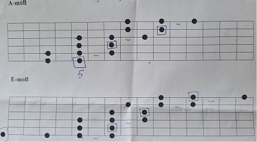
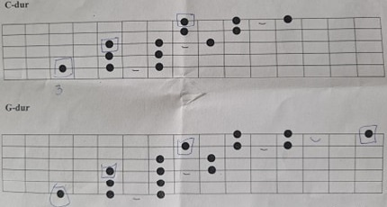

Lära dig spela Gitarr?
Att lära sig ett instrumet är en jobbig och lång resa att ta. Det är tuft och man måste kämpa mycket. Men ifall man vill bli riktigt bra på ett instrument måste man först lära sig grunderna
Skalor
Skalor är grunden till vad som låter bra när man spelar och är även den första dörren att öppna för att börja skriva egen musik
Pentagonisk skala

Dem röda prickarna är grundtonerna. för att få musiken du spelar att låta så bra som möjligt skall du försöka att alltid landa på grundnoten

Mol skalan är väldigt lik den pentagoniska molskalan, men den bygger vidare på konceptet och ökar friheten
Det praktiska med både skalorna är att dem fungerar att spela över hela halsen på gitarren
GlidSkalor
När du har fått in skalorna i muskelminet är det dag för något jag kallar för glidskalor
glidskalor är något jag använder mycket i mitt gitarrspelande och det går ut på att du flyttar dig mellan olika punkter på gitarrhalsen samtidigt som du spelar en skala
Dem 2 första skolorna vi kollar på spelas i moll. De inringade prickarna är grundnoterna och bågarna är vad man kallar en slide. det betyder att du drar fingret från första pricken till den andra
Den prick som ligger utanför skalan är en löss sträng. det betydet att du inte trycker med något finger på gitarrhalsen

Dem 2 andra glidskalorna är i dur. Men det är samma princip som molskalorna